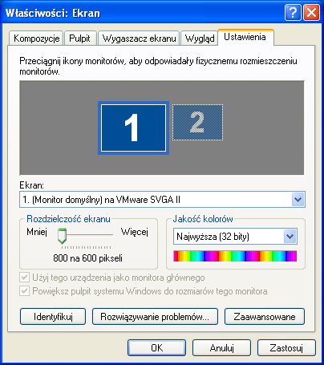
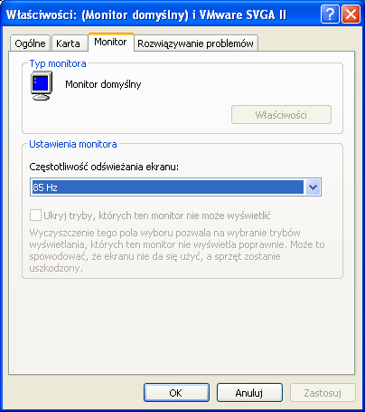
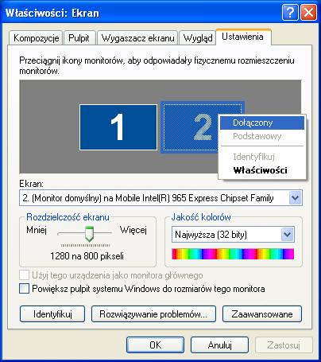

Ustawienie systemowe
Praca z jednym monitorem
W celu optymalnej pracy programu należy ustawić rozdzielczość 800*600 pikseli. Dla tej rozdzielczości należy wybrać maksymalną możliwą częstotliwość odświeżania.
Poniżej opisana jest procedura ustawienia tych parametrów dla sytemu Microsoft Windows XP:
- Kliknij prawym przyciskiem myszki na obszarze pulpitu i wybierz "Właściwości".
- W okienku, które się otworzy wybierz ostatnią zakładkę: "Ustawienia".
- Ustaw suwakiem rozdzielczość 800*600 podobnie jak na rys. 1.
- Zatwierdź zmiany przyciskiem "Zastosuj".
- Kliknij przycisk "Zaawansowane".
- W okienku, które się otworzy, wybierz zakładkę "Monitor".
- Z menu rozwijalnego wybierz maksymalną dostępną częstotliwość odświeżania, podobnie jak na rys. 2.
- Zatwierdź zmiany przyciskami "OK" w kolejnych oknach.
Praca dwumonitorowa
Przy pracy z dwoma monitorami należy ustawić na głównym monitorze rozdzielczość 800*600. Dla tej rozdzielczości należy na głównym monitorze ustawić maksymalną dostępną częstotliwość odświeżania. Rozdzielczość i częstotliwość na monitorze dodatkowym są nieistotne.
Poniżej opisana jest procedura ustawienia tych parametrów dla sytemu Microsoft Windows XP:
- Podłącz drugi monitor do komputera.
- Kliknij prawym przyciskiem myszki na obszarze pulpitu i wybierz "Właściwości".
- W okienku, które się otworzy wybierz ostatnią zakładkę: "Ustawienia".
- Kliknij prawym przyciskiem myszy na prostokącie symbolizującym drugi monitor i wybierz opcję "Dołączony" podobnie jak na rys. 2.
- Jeżeli drugi monitor ma służyć do wyświetlania testów dla pacjenta, oznacz go jako podstawowy. Aby to zrobić kliknij prawym przyciskiem myszy na prostokącie symbolizującym drugi monitor i wybierz opcję "Podstawowy".
- Zatwierdź zmiany przyciskiem "Zastosuj".
- Kliknij prawym klawiszem myszy na prostokącie symbolizującym podstawowy monitor.
- W okienku, które się otworzy, wybierz zakładkę "Monitor".
- Z menu rozwijalnego wybierz maksymalną dostępną częstotliwość odświeżania, podobnie jak na rys. 2.
- Zatwierdź zmiany przyciskami "OK" w kolejnych oknach.

Rys.1 Ustawianie rozdzielczości ekranu w systemie Windows XP

Rys.2 Ustawianie częstotliwości w systemie Windows XP

Rys.3 Dołączanie drugiego monitora w systemie Windows XP